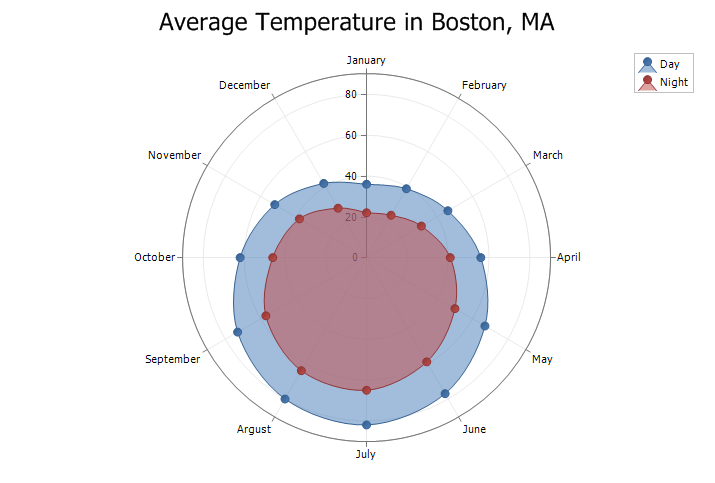
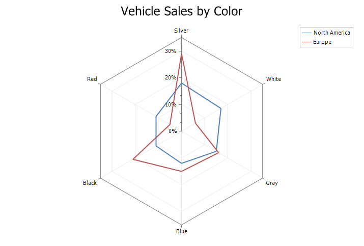
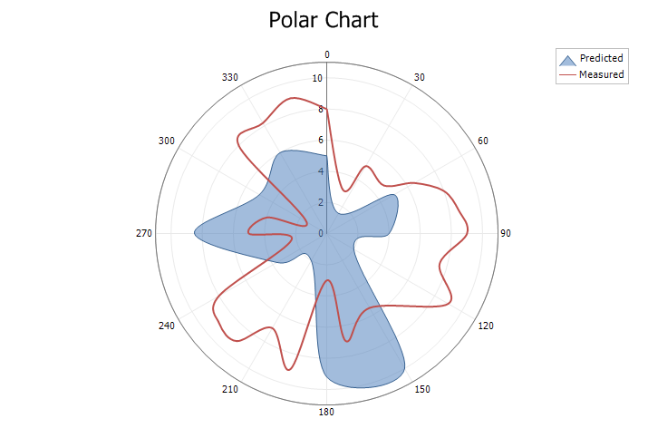
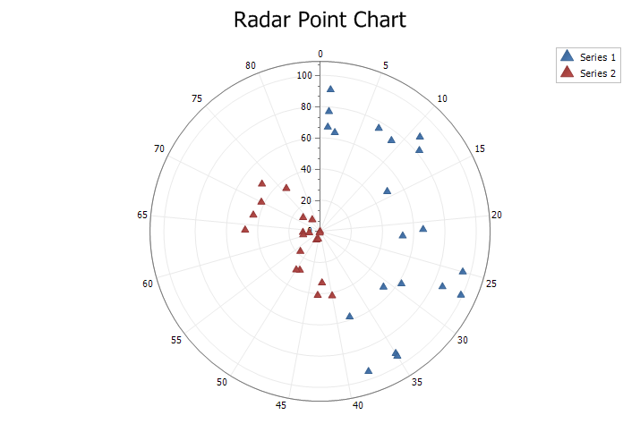

Help >
Codejock ActiveX Controls v15.3 > Xtreme Chart Pro > Objects > ChartRadarPointSeriesStyle Object >
Overview
| Xtreme Chart Pro ActiveX Control v15.3 |
Radar/Polar Point Style.
For a list of all members defined in this module, see ChartRadarPointSeriesStyle members.
  ~210.gif)
|
Radar/Polar charts can use several difference styles including Area, Spline Area, Line, Line Area and Point. Furthermore, they can be displayed as a circle diagram or "spider" diagram (straight lines).
Note: To make a "closed" loop the last data point must be the same as the first.
Radar Chart:
Radar charts are basically another form of a line chart, only it is represented as radar. Data is drawn as a line around the center of the radar. Radar charts use "poles" to display data. Each data point gets displayed on one of these poles radiating from the center. For each unique data point in the series a new pole will be added. The poles will be drawn in a 360 degree circle with each pole evenly spaced. The Y-Axis is used to plot data on the poles while the X-Axis is only used for labeling the poles. Data is plotted as (label, y), where "label" is the label for the pole and "y" is the distance from the center of the circle.
Radar charts are typically used to make a comparison of data for a set of categories. They make it easy to compare relative values for a single data point and find similar or dissimilar points. Radar charts are best suited for showing commonality and outliers (i.e. You can see certain car models tend to be more expensive with poor gas mileage). Typical uses for a radar chart would include categories of data occur in cycles (like nature, months of the year), when comparing differences between actual/measured and ideal/estimated data (estimated vs actual sales, sales by department, team performance, quality control), or when comparing strength and weaknesses (sports, department analysis).
Polar Chart:
Polar charts use polar coordinates to plot data. The X-Axis is a circle and the values are normally fixed in degrees (0-360) or radians typical polar charts, but the chart will allow you to set any range desired. Data is plotted in terms of values and angles, where "x" is the angle/rotation and "y" is distance from the center of the circle.
Polar charts are are their name implies, best suited when plotting polar data. Plotting mathematic functions is one common use for a polar chart. Any type of data that is represented by an angle and distance would be ideal. For some data it is useful to use the poles as a compass (North, South, East, West, etc..) and plot data relative to these directions (i.e. the location of houses can be plotted relative to the specified origin).
Area Style:

Line Style:

Spline and Spline Area Styles:

Point Style:

'Radar/Polar Point Style
ChartControl.Content.Legend.Visible = True
ChartControl.Content.Legend.HorizontalAlignment = xtpChartLegendFar
ChartControl.Content.EnableMarkup = True
ChartControl.Content.Titles.Add "Radar Point Chart"
Dim Style As ChartRadarPointSeriesStyle
Dim Series As ChartSeries
Set Series = ChartControl.Content.Series.Add("Series 1")
Series.ArgumentScaleType = xtpChartScaleNumerical
Series.Points.Add 1, 67
Series.Points.Add 14, 50
Series.Points.Add 9, 74
Series.Points.Add 38, 58
Series.Points.Add 2, 64
Series.Points.Add 25, 95
Series.Points.Add 1, 77
Series.Points.Add 1, 91
Series.Points.Add 35, 92
Series.Points.Add 27, 86
Series.Points.Add 31, 54
Series.Points.Add 22, 53
Series.Points.Add 12, 82
Series.Points.Add 21, 66
Series.Points.Add 38, 95
Series.Points.Add 7, 76
Series.Points.Add 11, 88
Series.Points.Add 29, 62
Series.Points.Add 27, 99
Series.Points.Add 35, 94
Set Style = New ChartRadarPointSeriesStyle
Set Series.Style = Style
Set Series = ChartControl.Content.Series.Add("Series 2")
Series.Points.Add 63, 11
Series.Points.Add 42, 33
Series.Points.Add 73, 14
Series.Points.Add 61, 11
Series.Points.Add 53, 18
Series.Points.Add 67, 44
Series.Points.Add 62, 7
Series.Points.Add 77, 9
Series.Points.Add 43, 41
Series.Points.Add 49, 28
Series.Points.Add 76, 35
Series.Points.Add 70, 42
Series.Points.Add 48, 6
Series.Points.Add 40, 42
Series.Points.Add 64, 48
Series.Points.Add 46, 5
Series.Points.Add 50, 29
Series.Points.Add 50, 0
Series.Points.Add 46, 1
Series.Points.Add 73, 48
Set Style = New ChartRadarPointSeriesStyle
Set Series.Style = Style
Dim Diagram As ChartRadarDiagram
Set Diagram = ChartControl.Content.Diagrams(0)
Diagram.AxisX.TickMarks.Visible = False